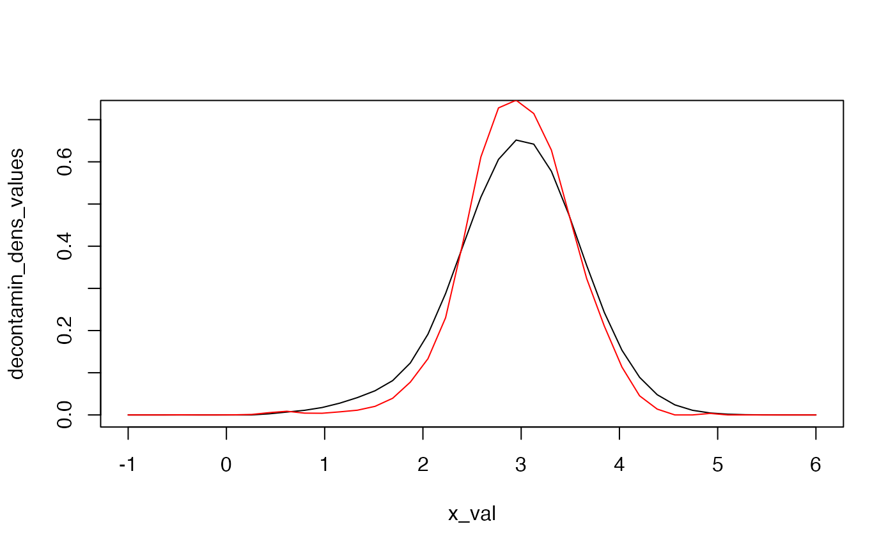

vignettes/admixture-weight-estimation.Rmd
admixture-weight-estimation.RmdWe remind that a random variable \(X\) following an admixture distribution has cumulative distribution function (cdf) \(L\) given by \[L(x) = pF(x) + (1-p)G(x), \qquad x \in \mathbb{R},\] where \(G\) is a mixture component whose distribution is perfectly known, whereas \(p\) and \(F\) are unknown.\ In this setting, if no parametric assumption is made on the unknown component distribution \(F\), the mixture is considered as a semiparametric mixture. For an overview on semiparametric extensions of finite mixture models, see (Xiang and Yang 2018).
The mixture weight \(p\) of the unknown component distribution can be estimated using diverse techniques depending on the assumptions made on the unknown cdf \(F\), among which the ones discussed in the sequel:
All the estimation methods presented hereafter can be performed using one single generic function for estimation with appropriate arguments, the so-called \(admix_estim\) function.
Many works studied the estimation of the unknown proportion in two-component admixture models. Among them, seminal papers are (D. Bordes L. and Vandekerkhove 2006) and (S. Bordes L. Mottelet and Vandekerkhove 2006). These papers are closely connected to the paper by (L. Bordes and Vandekerkhove 2010), where an asymptotic normal estimator is provided for the unknown component weight.
In this case, we use the Bordes and Vandekerkhove estimator, see (L. Bordes and Vandekerkhove 2010).
## Simulate data:
list.comp <- list(f = 'norm', g = 'norm')
list.param <- list(f = list(mean = 3, sd = 0.5), g = list(mean = 0, sd = 1))
data1 <- rsimmix(n = 800, unknownComp_weight = 0.7, list.comp, list.param)[['mixt.data']]
## Perform the estimation of parameters in real-life:
list.comp <- list(f = NULL, g = 'norm')
list.param <- list(f = NULL, g = list(mean = 0, sd = 1))
BVdk_estimParam(data1, method = 'L-BFGS-B', list.comp, list.param)
#> [1] 0.7214759 2.9754155Here we look at the first listed parameter, which corresponds to the estimate of the unknown component weight.
In this case, we use the Patra and Sen estimator, see (Patra and Sen 2016).
## Simulate data:
list.comp <- list(f = 'norm', g = 'norm')
list.param <- list(f = list(mean = 3, sd = 0.5), g = list(mean = 0, sd = 1))
data1 <- rsimmix(n = 1000, unknownComp_weight = 0.6, list.comp, list.param)[['mixt.data']]
## Transform the known component of the admixture model into a Uniform(O,1) distribution:
list.comp <- list(f = NULL, g = 'norm')
list.param <- list(f = NULL, g = list(mean = 0, sd = 1))
data1_transfo <- knownComp_to_uniform(data = data1, comp.dist=list.comp, comp.param=list.param)
PatraSen_est_mix_model(data = data1_transfo, method = 'fixed',
c.n = 0.1*log(log(length(data1_transfo))), gridsize = 1000)$alp.hat
#> [1] 0.636In the two-sample setting, the idea is to use the Inversion - Best Matching (IBM) approach. The IBM method sensures asymptotically normal estimators of the unknown quantities, which will be very useful in a testing perspective. However, it is important to note that such estimators are mostly biased when \(F_1 \neq F_2\), and general one-sample estimation strategies such as (Patra and Sen 2016) or (L. Bordes and Vandekerkhove 2010) may be preferred to estimate the unknown component proportion in general settings (despite that this is much more time-consuming). In the latter case, one performs twice the estimation method, on each of the two samples under study.
When we are under the null, Milhaud and Vandekerkhove (2021) show that the estimatorsis consistent towards the true parameter values.
## Simulate data:
list.comp <- list(f1 = 'norm', g1 = 'norm',
f2 = 'norm', g2 = 'norm')
list.param <- list(f1 = list(mean = 3, sd = 0.5), g1 = list(mean = 0, sd = 1),
f2 = list(mean = 3, sd = 0.5), g2 = list(mean = 5, sd = 2))
sample1 <- rsimmix(n=1700, unknownComp_weight=0.5, comp.dist = list(list.comp$f1,list.comp$g1),
comp.param=list(list.param$f1,list.param$g1))
sample2 <- rsimmix(n=1500, unknownComp_weight=0.7, comp.dist = list(list.comp$f2,list.comp$g2),
comp.param=list(list.param$f2,list.param$g2))
##### On a real-life example (unknown component densities, unknown mixture weights).
list.comp <- list(f1 = NULL, g1 = 'norm',
f2 = NULL, g2 = 'norm')
list.param <- list(f1 = NULL, g1 = list(mean = 0, sd = 1),
f2 = NULL, g2 = list(mean = 5, sd = 2))
## Estimate the mixture weights of the two admixture models (provide only hat(theta)_n):
estim <- IBM_estimProp(sample1 = sample1[['mixt.data']], sample2 = sample2[['mixt.data']],
known.prop = NULL, comp.dist = list.comp, comp.param = list.param,
with.correction = FALSE, n.integ = 1000)
estim[['prop.estim']]
#> [1] 0.4965816 0.6789515Indeed, the two unknown proportions were consistently estimated.
Estimators are consistent under \(H_1\), although they can be (strongly) biased as compared to their true values.
## Simulate data:
list.comp <- list(f1 = 'norm', g1 = 'norm',
f2 = 'norm', g2 = 'norm')
list.param <- list(f1 = list(mean = 1, sd = 0.5), g1 = list(mean = 0, sd = 1),
f2 = list(mean = 3, sd = 0.5), g2 = list(mean = 5, sd = 2))
sample1 <- rsimmix(n=1700, unknownComp_weight=0.5, comp.dist = list(list.comp$f1,list.comp$g1),
comp.param=list(list.param$f1,list.param$g1))
sample2 <- rsimmix(n=1500, unknownComp_weight=0.7, comp.dist = list(list.comp$f2,list.comp$g2),
comp.param=list(list.param$f2,list.param$g2))
##### On a real-life example (unknown component densities, unknown mixture weights).
list.comp <- list(f1 = NULL, g1 = 'norm',
f2 = NULL, g2 = 'norm')
list.param <- list(f1 = NULL, g1 = list(mean = 0, sd = 1),
f2 = NULL, g2 = list(mean = 5, sd = 2))
## Estimate the mixture weights of the two admixture models (provide only hat(theta)_n):
estim <- IBM_estimProp(sample1 = sample1[['mixt.data']], sample2 = sample2[['mixt.data']],
known.prop = NULL, comp.dist = list.comp, comp.param = list.param,
with.correction = FALSE, n.integ = 1000)
estim[['prop.estim']]
#> [1] 0.3591188 0.5253407Concerning the unknown cdf \(F\), one usually estimate it thanks to the inversion formula \[F(x) = \dfrac{L(x) - (1-p)G(x)}{p},\] once \(p\) has been consistenly estimated.
This is what is commonly called the decontaminated density of the unknown component. In the following, we propose to compare the two decontaminated densities obtained once the unknown quantities have been consistently estimated by the IBM approach. Note that we are under the null (\(F_1=F_2\)), and thus that the decontaminated densities should look similar.
## Simulate data:
list.comp <- list(f1 = 'norm', g1 = 'norm',
f2 = 'norm', g2 = 'norm')
list.param <- list(f1 = list(mean = 3, sd = 0.5), g1 = list(mean = 0, sd = 1),
f2 = list(mean = 3, sd = 0.5), g2 = list(mean = 5, sd = 2))
sample1 <- rsimmix(n=1700, unknownComp_weight=0.5, comp.dist = list(list.comp$f1,list.comp$g1),
comp.param=list(list.param$f1,list.param$g1))
sample2 <- rsimmix(n=1500, unknownComp_weight=0.7, comp.dist = list(list.comp$f2,list.comp$g2),
comp.param=list(list.param$f2,list.param$g2))
## Estimate the mixture weight in each of the sample in real-life setting:
list.comp <- list(f1 = NULL, g1 = 'norm',
f2 = NULL, g2 = 'norm')
list.param <- list(f1 = NULL, g1 = list(mean = 0, sd = 1),
f2 = NULL, g2 = list(mean = 5, sd = 2))
estimate <- IBM_estimProp(sample1[['mixt.data']], sample2[['mixt.data']], comp.dist = list.comp,
comp.param = list.param, with.correction = FALSE, n.integ = 1000)
## Determine the decontaminated version of the unknown density by inversion:
res <- IBM_decontaminated_unknownComp(sample1 = sample1[['mixt.data']],
sample2 = sample2[['mixt.data']],
comp.dist = list.comp, comp.param = list.param,
estim.obj = estimate, add_plot = TRUE)